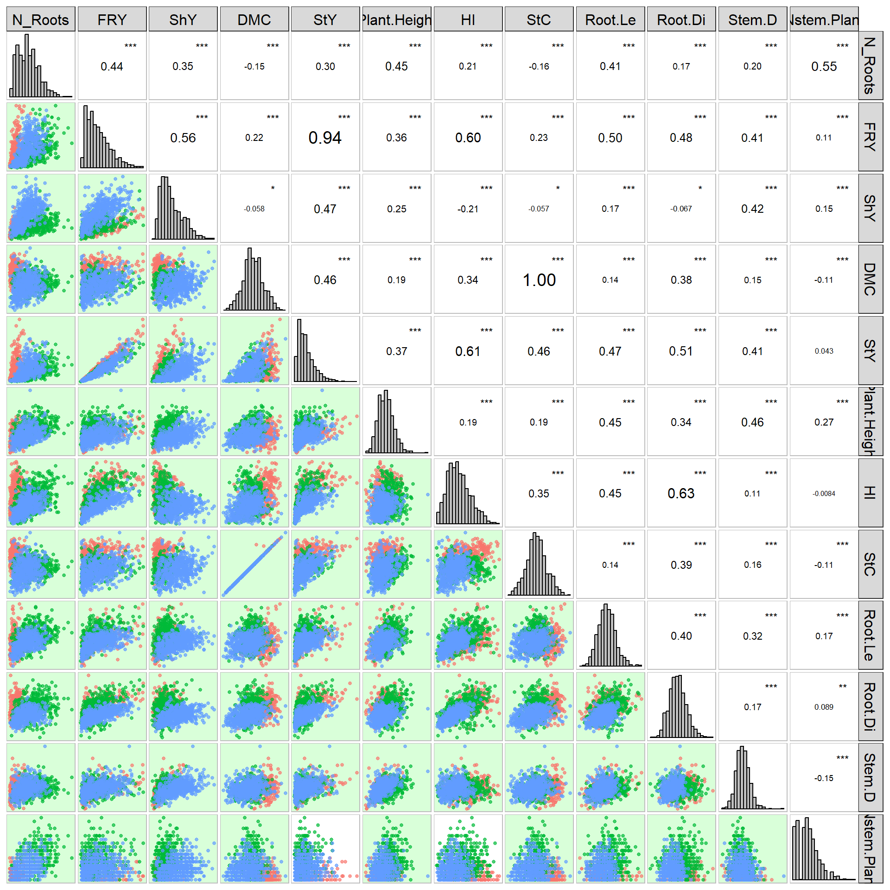

Last updated: 2025-01-13
Checks: 6 1
Knit directory:
Genomic-Selection-for-Drought-Tolerance-Using-Genome-Wide-SNPs-in-Casava/
This reproducible R Markdown analysis was created with workflowr (version 1.7.1). The Checks tab describes the reproducibility checks that were applied when the results were created. The Past versions tab lists the development history.
The R Markdown file has unstaged changes. To know which version of
the R Markdown file created these results, you’ll want to first commit
it to the Git repo. If you’re still working on the analysis, you can
ignore this warning. When you’re finished, you can run
wflow_publish to commit the R Markdown file and build the
HTML.
Great job! The global environment was empty. Objects defined in the global environment can affect the analysis in your R Markdown file in unknown ways. For reproduciblity it’s best to always run the code in an empty environment.
The command set.seed(20221020) was run prior to running
the code in the R Markdown file. Setting a seed ensures that any results
that rely on randomness, e.g. subsampling or permutations, are
reproducible.
Great job! Recording the operating system, R version, and package versions is critical for reproducibility.
Nice! There were no cached chunks for this analysis, so you can be confident that you successfully produced the results during this run.
Great job! Using relative paths to the files within your workflowr project makes it easier to run your code on other machines.
Great! You are using Git for version control. Tracking code development and connecting the code version to the results is critical for reproducibility.
The results in this page were generated with repository version 77e21a6. See the Past versions tab to see a history of the changes made to the R Markdown and HTML files.
Note that you need to be careful to ensure that all relevant files for
the analysis have been committed to Git prior to generating the results
(you can use wflow_publish or
wflow_git_commit). workflowr only checks the R Markdown
file, but you know if there are other scripts or data files that it
depends on. Below is the status of the Git repository when the results
were generated:
Ignored files:
Ignored: .Rhistory
Ignored: .Rproj.user/
Ignored: Artigo GS tolerancia a seca_revised.rar
Ignored: Seleção Genômica deficit hidrico.pptx
Ignored: data/allchrAR08.txt
Untracked files:
Untracked: Artigo GS tolerancia a seca_revised/
Untracked: ETA_1_ScaleBayesA.dat
Untracked: ETA_1_parBayesB.dat
Untracked: analysis/figure/
Untracked: analysis/mixed_models.Rmd
Untracked: data/Article.docx
Untracked: data/Article2.docx
Untracked: data/Articles/
Untracked: data/Costa et al_FPS_2024 manuscript eng.docx
Untracked: data/Costa et al_FPS_2024 manuscript eng_v1.docx
Untracked: data/Costa et al_FPS_2024 manuscript eng_v2.docx
Untracked: data/Costa et al_FPS_2024 manuscript eng_v3.docx
Untracked: data/Costa et al_FPS_2024 manuscript.docx
Untracked: data/Costa et al_FPS_2024 supplement.docx
Untracked: data/Frontiers_Template.docx
Untracked: data/Phenotyping2.xlsx
Untracked: data/Supplementary_Material.docx
Untracked: data/Tabela auxiliar.xlsx
Untracked: data/dados__temp_umi.csv
Untracked: data/data.rar
Untracked: mu.dat
Untracked: output/BLUPS2.csv
Untracked: output/BLUPS_GEBV_GETG_all clones.csv
Untracked: output/BLUPS_density_med.png
Untracked: output/BLUPS_density_med_row_col.png
Untracked: output/BLUPS_drgBLUPs__boxplot_med.png
Untracked: output/BLUPS_drgBLUPs__boxplot_med_row_col.png
Untracked: output/BLUPS_drgBLUPs_density_med.png
Untracked: output/BLUPS_drgBLUPs_med.png
Untracked: output/BLUPS_par_mmer.Rdata
Untracked: output/BLUPS_row_col.csv
Untracked: output/BLUPS_row_col_random.csv
Untracked: output/BLUPS_x_BLUPS_row_col_boxplot_med.png
Untracked: output/Density_residual_row_col.tiff
Untracked: output/Figuras_article.rar
Untracked: output/GEBVS_BayesA.RDS
Untracked: output/GEBVS_BayesB.RDS
Untracked: output/GEBVS_DOM.RDS
Untracked: output/GEBVS_G_BLUP.RDS
Untracked: output/GEBVS_G_BLUP_row_col.RDS
Untracked: output/GEBVS_G_BLUP_row_col_random.RDS
Untracked: output/GEBVS_RF.RDS
Untracked: output/GEBVS_RKHS.RDS
Untracked: output/GEBVS_RR_BLUP.RDS
Untracked: output/GEBV_BLUP.csv
Untracked: output/GEBV_DOMxBLUPS.tiff
Untracked: output/GEBV_GBLUPxBLUPS.tiff
Untracked: output/GEBVxGETGV.tiff
Untracked: output/GETGVxBLUPS.tiff
Untracked: output/G_matrix.rds
Untracked: output/H2.csv
Untracked: output/H2_row_col.csv
Untracked: output/H2_row_col_random.csv
Untracked: output/Heatmap.tiff
Untracked: output/MSPE_all_methods.tiff
Untracked: output/Residuals_vs_fitted_row_col.tiff
Untracked: output/accuracy_all_methods.tiff
Untracked: output/accuracy_all_methods_points.tiff
Untracked: output/cor_GEBVxBLUPS.tiff
Untracked: output/cor_GEBVxBLUPS_all_methods.tiff
Untracked: output/correlation_blups.tiff
Untracked: output/density_blups.tiff
Untracked: output/dierencial_selecao.csv
Untracked: output/dierencial_selecao.xlsx
Untracked: output/drgBLUP.csv
Untracked: output/fitted_residual_data_row_col_random.csv
Untracked: output/fitted_values_row_col_random.csv
Untracked: output/indice_selection.tiff
Untracked: output/indice_selection3.tiff
Untracked: output/indice_selection_GEBV.tiff
Untracked: output/indice_selection_GEBV_GETGV.tiff
Untracked: output/indice_selection_GETGV.tiff
Untracked: output/kappa.tiff
Untracked: output/kappa2.tiff
Untracked: output/mean_pheno.csv
Untracked: output/medias_semestre.xlsx
Untracked: output/pesos_BLUPS_all clones.csv
Untracked: output/pesos_GEBVS_all clones.csv
Untracked: output/pesos_GETGVS_all clones.csv
Untracked: output/pheno_mean_sd.csv
Untracked: output/residuos_row_col_random.csv
Untracked: output/result_sommer.RData
Untracked: output/result_sommer_row_col.RData
Untracked: output/result_sommer_row_col_random.RDS
Untracked: output/result_sommer_row_col_random_optimized.RDS
Untracked: output/results_MSPE.csv
Untracked: output/results_accuracy.csv
Untracked: output/results_cv_BayesA.RDS
Untracked: output/results_cv_BayesB.RDS
Untracked: output/results_cv_DOM.RDS
Untracked: output/results_cv_G_BLUP.RDS
Untracked: output/results_cv_G_BLUP_row_col.RDS
Untracked: output/results_cv_G_BLUP_row_col_random.RDS
Untracked: output/results_cv_RF.RDS
Untracked: output/results_cv_RKHS.RDS
Untracked: output/results_cv_RR_BLUP.RDS
Untracked: output/results_h2_GBLUP (1).rds
Untracked: output/results_h2_GBLUP.csv
Untracked: output/results_h2_GBLUP.rds
Untracked: output/results_h2_GBLUP_D.rds
Untracked: output/results_kappa.csv
Untracked: output/results_kappa2.csv
Untracked: output/results_values-selection.csv
Untracked: output/results_values_kappa.csv
Untracked: output/results_values_rescale_selection.csv
Untracked: output/results_values_selection.csv
Untracked: output/rstudio-export.zip
Untracked: output/semester_means.xlsx
Untracked: output/teste_LRT.csv
Untracked: output/teste_LRT_row_col.csv
Untracked: output/teste_LRT_row_col_random.csv
Untracked: output/varcomp.tiff
Untracked: output/varcomp2.csv
Untracked: output/varcomp_row_col.csv
Untracked: output/varcomp_row_col.tiff
Untracked: output/varcomp_row_col_random.csv
Untracked: output/varcomp_row_col_random.tiff
Untracked: varE.dat
Unstaged changes:
Modified: analysis/GWS.Rmd
Modified: analysis/phenotype.Rmd
Modified: data/SNPs.rds
Modified: data/pheno_clean.csv
Modified: output/BLUPS.csv
Modified: output/BLUPS_par.Rdata
Modified: output/media_pheno.csv
Modified: output/varcomp.csv
Note that any generated files, e.g. HTML, png, CSS, etc., are not included in this status report because it is ok for generated content to have uncommitted changes.
These are the previous versions of the repository in which changes were
made to the R Markdown (analysis/phenotype.Rmd) and HTML
(docs/phenotype.html) files. If you’ve configured a remote
Git repository (see ?wflow_git_remote), click on the
hyperlinks in the table below to view the files as they were in that
past version.
| File | Version | Author | Date | Message |
|---|---|---|---|---|
| Rmd | 77e21a6 | Weverton Gomes | 2025-01-13 | Update Index and phenotype |
| html | 97fd0b9 | Weverton Gomes | 2025-01-07 | update about.html, license.html, phenotype.html |
| Rmd | 54c6e28 | Weverton Gomes | 2025-01-07 | update site, index.rmd, license.rmd, phenotype.rmd |
| html | c64a991 | Weverton Gomes | 2023-10-27 | add phenotype html |
| Rmd | 286b492 | Weverton Gomes | 2023-10-27 | Update Scripts and README |
| Rmd | 90dc112 | WevertonGomesCosta | 2022-11-17 | Update |
| Rmd | 6cc4d23 | WevertonGomesCosta | 2022-11-17 | Update |
| html | 6cc4d23 | WevertonGomesCosta | 2022-11-17 | Update |
| html | d930880 | WevertonGomesCosta | 2022-11-11 | Update |
| Rmd | 5988c27 | WevertonGomesCosta | 2022-11-11 | Update |
| html | 5988c27 | WevertonGomesCosta | 2022-11-11 | Update |
| Rmd | bf7b1d3 | WevertonGomesCosta | 2022-11-11 | Update |
| html | bf7b1d3 | WevertonGomesCosta | 2022-11-11 | Update |
Libraries
Load the necessary libraries:
library(kableExtra)
library(tidyverse)
#if (!require("BiocManager", quietly = TRUE))
# install.packages("BiocManager")
#BiocManager::install("ComplexHeatmap")
require(ComplexHeatmap)
library(data.table)
library(readxl)
library(metan)
library(DataExplorer)
library(ggthemes)
library(GGally)
theme_set(theme_bw())Data import and manipulation
Import the phenotypic dataset, excluding traits without information and redundant traits:
pheno <- read_excel("data/Phenotyping2.xlsx", na = "NA") %>%
select_if(~ !all(is.na(.))) %>% # Deleting traits without information
select(-c("Local", "Tratamento"))Convert character traits to factors, and numeric grades to integer factors:
Exploratory Data Analysis
Provide an introductory analysis of the dataset:
introduce(pheno) %>%
t() %>%
kbl(escape = F, align = 'c') %>%
kable_classic("hover", full_width = F, position = "center", fixed_thead = T)| rows | 2336 |
| columns | 29 |
| discrete_columns | 6 |
| continuous_columns | 23 |
| all_missing_columns | 0 |
| total_missing_values | 16875 |
| complete_rows | 440 |
| total_observations | 67744 |
| memory_usage | 534240 |
We don’t have any columns that have all of the missing observations, but we do have a lot of missing values in every dataset. Some manipulations should be performed to improve the quality of the data.
Environment Analysis
Heatmap visualization of clone presence per year:
pheno_year_count <- pheno %>%
count(Ano, Clone)
genmat <- model.matrix(~ -1 + Clone, data = pheno_year_count)
envmat <- model.matrix(~ -1 + Ano, data = pheno_year_count)
genenvmat <- t(envmat) %*% genmat
genenvmat_ch <- ifelse(genenvmat == 1, "Present", "Absent")
Heatmap(genenvmat_ch,
col = c("white", "tomato"),
show_column_names = F,
heatmap_legend_param = list(title = ""),
column_title = "Genotypes",
row_title = "Environments")
| Version | Author | Date |
|---|---|---|
| 77e21a6 | Weverton Gomes | 2025-01-13 |
Filter out the year 2016 due to insufficient observations:
Reinspect the updated heatmap:
pheno_year_count <- pheno %>%
count(Ano, Clone)
genmat <- model.matrix(~ -1 + Clone, data = pheno_year_count)
envmat <- model.matrix(~ -1 + Ano, data = pheno_year_count)
genenvmat <- t(envmat) %*% genmat
genenvmat_ch <- ifelse(genenvmat == 1, "Present", "Absent")
Heatmap(genenvmat_ch,
col = c("white", "tomato"),
show_column_names = F,
heatmap_legend_param = list(title = ""),
column_title = "Genotypes",
row_title = "Environments")
| Version | Author | Date |
|---|---|---|
| 77e21a6 | Weverton Gomes | 2025-01-13 |
Visualize the number of environments and genotypes:
genotype_year_table <- genenvmat %*% t(genenvmat) %>%
kbl(escape = F, align = 'c') %>%
kable_classic("hover", full_width = F, position = "center", fixed_thead = T)
rm(pheno_year_count, genmat, envmat, genenvmat, genenvmat_ch)
genotype_year_table| Ano2017 | Ano2018 | Ano2019 | Ano2020 | |
|---|---|---|---|---|
| Ano2017 | 165 | 42 | 22 | 14 |
| Ano2018 | 42 | 138 | 39 | 16 |
| Ano2019 | 22 | 39 | 133 | 29 |
| Ano2020 | 14 | 16 | 29 | 138 |
Observe that some clones were evaluated in only one year. The number of clones evaluated across different years is summarized below:
pheno %>%
count(Ano, Clone) %>%
count(Clone) %>%
count(n) %>%
kbl(escape = F, align = 'c', col.names = c("N of Environment", "N of Genotypes")) %>%
kable_classic("hover", full_width = F, position = "center", fixed_thead = T)Storing counts in `nn`, as `n` already present in input
ℹ Use `name = "new_name"` to pick a new name.| N of Environment | N of Genotypes |
|---|---|
| 1 | 350 |
| 2 | 72 |
| 3 | 20 |
| 4 | 5 |
Only 5 clones were evaluated in all years, which might affect the model’s accuracy. Therefore, adopting mixed models via REML in the analysis is suitable for obtaining BLUPs.
Analysis of traits
Provide descriptive statistics for each trait:
summary_table <- summary(pheno) %>%
t() %>%
kbl(escape = F, align = 'c') %>%
kable_classic("hover", full_width = F, position = "center", fixed_thead = T)
summary_table| Clone | BGM-0164: 16 | BGM-0170: 16 | BGM-0396: 16 | BGM-1243: 16 | BGM-1267: 16 | BGM-0134: 12 | (Other) :2204 |
| Ano | 2017:660 | 2018:552 | 2019:532 | 2020:552 | NA | NA | NA |
| Bloco | 1:574 | 2:574 | 3:574 | 4:574 | NA | NA | NA |
| row | 11 : 121 | 3 : 120 | 10 : 120 | 2 : 119 | 6 : 118 | 4 : 117 | (Other):1581 |
| col | 6 : 131 | 4 : 130 | 8 : 130 | 2 : 128 | 5 : 128 | 9 : 128 | (Other):1521 |
| N_Roots | Min. : 0.125 | 1st Qu.: 2.333 | Median : 4.000 | Mean : 4.293 | 3rd Qu.: 6.000 | Max. :15.667 | NA’s :322 |
| FRY | Min. : 0.116 | 1st Qu.: 1.857 | Median : 3.750 | Mean : 4.946 | 3rd Qu.: 6.857 | Max. :22.200 | NA’s :335 |
| ShY | Min. : 0.694 | 1st Qu.: 6.944 | Median :11.167 | Mean :14.228 | 3rd Qu.:18.714 | Max. :61.167 | NA’s :211 |
| DMC | Min. :11.98 | 1st Qu.:25.00 | Median :28.80 | Mean :29.06 | 3rd Qu.:32.78 | Max. :48.34 | NA’s :968 |
| StY | Min. :0.0154 | 1st Qu.:0.5494 | Median :1.2068 | Mean :1.5164 | 3rd Qu.:2.1092 | Max. :8.8669 | NA’s :978 |
| Plant.Height | Min. :0.3600 | 1st Qu.:0.9633 | Median :1.1600 | Mean :1.1919 | 3rd Qu.:1.3908 | Max. :3.0333 | NA’s :220 |
| HI | Min. : 1.574 | 1st Qu.:15.726 | Median :23.345 | Mean :24.556 | 3rd Qu.:31.884 | Max. :71.967 | NA’s :341 |
| StC | Min. : 7.326 | 1st Qu.:20.350 | Median :24.147 | Mean :24.419 | 3rd Qu.:28.160 | Max. :43.686 | NA’s :968 |
| PltArc | Min. :1.000 | 1st Qu.:1.000 | Median :2.000 | Mean :1.996 | 3rd Qu.:3.000 | Max. :5.000 | NA’s :678 |
| Leaf.Ret | Min. :0.3333 | 1st Qu.:1.0000 | Median :1.3333 | Mean :1.7796 | 3rd Qu.:2.0000 | Max. :5.0000 | NA’s :216 |
| Root.Le | Min. : 7.00 | 1st Qu.:19.00 | Median :23.00 | Mean :23.21 | 3rd Qu.:27.00 | Max. :47.33 | NA’s :339 |
| Root.Di | Min. : 6.12 | 1st Qu.:23.36 | Median :28.17 | Mean :28.88 | 3rd Qu.:33.50 | Max. :63.30 | NA’s :339 |
| Stem.D | Min. :1.013 | 1st Qu.:1.859 | Median :2.101 | Mean :2.112 | 3rd Qu.:2.362 | Max. :4.373 | NA’s :224 |
| Mite | Min. :1.000 | 1st Qu.:3.000 | Median :3.667 | Mean :3.475 | 3rd Qu.:4.000 | Max. :5.000 | NA’s :222 |
| Incidence_Mites | Min. :1 | 1st Qu.:1 | Median :1 | Mean :1 | 3rd Qu.:1 | Max. :1 | NA’s :674 |
| Nstem.Plant | Min. :1.000 | 1st Qu.:1.333 | Median :2.000 | Mean :2.131 | 3rd Qu.:2.667 | Max. :6.667 | NA’s :850 |
| Stand6MAP | Min. :1.000 | 1st Qu.:4.000 | Median :6.000 | Mean :5.202 | 3rd Qu.:7.000 | Max. :8.000 | NA’s :849 |
| Branching | Min. :0.0000 | 1st Qu.:0.0000 | Median :0.3333 | Mean :0.5911 | 3rd Qu.:1.0000 | Max. :4.0000 | NA’s :673 |
| Staygreen | Min. :1.000 | 1st Qu.:1.000 | Median :1.000 | Mean :1.292 | 3rd Qu.:2.000 | Max. :3.000 | NA’s :669 |
| Vigor | Mode:logical | TRUE:1075 | NA’s:1221 | NA | NA | NA | NA |
| Flowering | Min. :0.0000 | 1st Qu.:0.0000 | Median :0.0000 | Mean :0.0074 | 3rd Qu.:0.0000 | Max. :1.0000 | NA’s :673 |
| Canopy_Lenght | Min. : 10.00 | 1st Qu.: 54.33 | Median : 72.00 | Mean : 73.35 | 3rd Qu.: 91.67 | Max. :240.17 | NA’s :1458 |
| Canopy_Width | Min. : 7.50 | 1st Qu.: 56.33 | Median : 75.58 | Mean : 76.68 | 3rd Qu.: 96.00 | Max. :213.33 | NA’s :1458 |
| Leaf_Lenght | Min. : 3.750 | 1st Qu.: 8.417 | Median :11.250 | Mean :11.676 | 3rd Qu.:14.200 | Max. :32.667 | NA’s :1459 |
Exclude traits with high missing value ratios:
pheno <- pheno %>%
select(-c(Incidence_Mites, Vigor, Flowering, Leaf_Lenght, Canopy_Width, Canopy_Lenght))Ensure that the traits have acceptable missing value ratios:
| Version | Author | Date |
|---|---|---|
| 77e21a6 | Weverton Gomes | 2025-01-13 |
Evaluate the distribution of traits by year with histograms for quantitative traits:

| Version | Author | Date |
|---|---|---|
| 77e21a6 | Weverton Gomes | 2025-01-13 |
Remove traits that lack normal distribution:
Analisys of Clone
Inspect missing values by clone and year:
pheno_missing_summary <- pheno %>%
select(-Bloco, -row, -col) %>%
group_by(Clone, Ano) %>%
summarise_all(.funs = list(~ sum(is.na(.)))) %>%
ungroup() %>%
select_numeric_cols() %>%
mutate(mean = rowMeans(.),
Clone.Ano = factor(unique(interaction(pheno$Clone, pheno$Ano)))) %>%
filter(mean > 2) %>%
droplevels()
missing_genotypes <- nlevels(pheno_missing_summary$Clone.Ano) %>%
kbl(escape = F, align = 'c', col.names = c("N of genotypes")) %>%
kable_classic("hover", full_width = F, position = "center", fixed_thead = T)
missing_genotypes| N of genotypes |
|---|
| 54 |
Evaluate clone and year descriptive statistics:
clone_year_stats <- ge_details(pheno, Ano, Clone, resp = everything()) %>%
t() %>%
kbl(escape = F, align = 'c') %>%
kable_classic("hover", full_width = F, position = "center", fixed_thead = T)
clone_year_stats| Parameters | Mean | SE | SD | CV | Min | Max | MinENV | MaxENV | MinGEN | MaxGEN |
| N_Roots | 4.29 | 0.06 | 2.51 | 58.56 | 0.12 (BGM-1031 in 2017) | 15.67 (2012-107-002 in 2019) | 2018 (1.62) | 2019 (5.76) | BGM-0411 (0.33) | 2012-107-002 (11.33) |
| FRY | 4.95 | 0.09 | 4.04 | 81.79 | 0.12 (BGM-0886 in 2017) | 22.2 (BGM-1267 in 2018) | 2017 (2.75) | 2020 (6.52) | BGM-1488 (0.34) | IAC-14 (14.07) |
| ShY | 14.23 | 0.22 | 10.16 | 71.45 | 0.69 (BGM-0996 in 2017) | 61.17 (BGM-2124 in 2020) | 2017 (8.47) | 2020 (25.87) | BGM-0048 (1.52) | BGM-2124 (54.33) |
| DMC | 29.06 | 0.17 | 6.1 | 21 | 11.98 (BGM-0626 in 2020) | 48.34 (BGM-1015 in 2020) | 2020 (26.21) | 2018 (35.38) | BGM-0626 (14.98) | BGM-1015 (45.02) |
| StY | 1.52 | 0.04 | 1.27 | 84.01 | 0.02 (BGM-0340 in 2019) | 8.87 (BGM-0396 in 2018) | 2019 (1.32) | 2018 (1.84) | BGM-0089 (0.06) | BGM-1023 (4.76) |
| Plant.Height | 1.19 | 0.01 | 0.33 | 27.43 | 0.36 (BGM-0426 in 2020) | 3.03 (BR-11-24-156 in 2020) | 2017 (1) | 2019 (1.48) | Jatobá (0.58) | BGM-1200 (1.91) |
| HI | 24.56 | 0.27 | 11.89 | 48.42 | 1.57 (BGM-1159 in 2017) | 71.97 (BGM-1315 in 2018) | 2020 (18.61) | 2018 (32.36) | BGM-0961 (2.5) | Mata_Fome_Branca (52.78) |
| StC | 24.42 | 0.17 | 6.11 | 25.05 | 7.33 (BGM-0626 in 2020) | 43.69 (BGM-1015 in 2020) | 2020 (21.56) | 2018 (30.78) | BGM-0626 (10.33) | BGM-1015 (40.37) |
| Root.Le | 23.21 | 0.13 | 5.8 | 24.99 | 7 (BGM-1574 in 2017) | 47.33 (BGM-0396 in 2018) | 2017 (19.72) | 2019 (27.14) | Jatobá (8.5) | BGM-1956 (35.5) |
| Root.Di | 28.88 | 0.18 | 7.9 | 27.35 | 6.12 (BGM-2142 in 2019) | 63.3 (BRS Mulatinha in 2018) | 2017 (24.49) | 2018 (34.74) | BGM-0089 (12.14) | BGM-1956 (48.91) |
| Stem.D | 2.11 | 0.01 | 0.38 | 17.9 | 1.01 (BGM-0592 in 2018) | 4.37 (BRS Tapioqueira in 2020) | 2018 (2.02) | 2017 (2.16) | BGM-0048 (1.25) | BGM-1523 (2.93) |
| Nstem.Plant | 2.13 | 0.03 | 0.95 | 44.53 | 1 (BGM-0036 in 2018) | 6.67 (BGM-0714 in 2019) | 2018 (1.44) | 2019 (2.71) | BGM-0066 (1) | BGM-0451 (4.44) |
Again, some traits were not computed for the year 2017, so we have to eliminate that year when performing the analysis for these traits.
Evaluate the clone-only descriptive statistics for the traits.
cv_stats <- desc_stat(pheno, by = Ano, na.rm = TRUE, stats = "cv") %>%
na.omit() %>%
arrange(desc(cv)) %>%
pivot_wider(names_from = "Ano", values_from = "cv") %>%
kbl(escape = F, align = 'c') %>%
kable_classic("hover", full_width = F, position = "center", fixed_thead = T)
cv_stats| variable | 2018 | 2020 | 2019 | 2017 |
|---|---|---|---|---|
| StY | 91.8742 | 81.2220 | 72.3243 | NA |
| FRY | 86.0073 | 68.4455 | 70.0326 | 66.8379 |
| ShY | 69.0625 | 42.7475 | 47.4901 | 45.4973 |
| N_Roots | 63.2913 | 47.0839 | 47.2357 | 48.8708 |
| HI | 41.5442 | 43.3204 | 41.8572 | 48.2942 |
| Nstem.Plant | 33.3849 | 37.1507 | 37.3740 | NA |
| Plant.Height | 28.0409 | 24.0927 | 19.1125 | 21.0398 |
| StC | 15.6937 | 27.3600 | 16.5407 | NA |
| Root.Le | 27.1625 | 18.9730 | 21.1089 | 21.5823 |
| Root.Di | 23.3943 | 20.5858 | 24.3155 | 21.0039 |
| DMC | 13.6086 | 22.5059 | 13.8212 | NA |
| Stem.D | 22.3941 | 17.5042 | 15.7037 | 16.7774 |
Some traits were not computed for the year 2017, so we have to eliminate that year when performing the analysis for these traits and some traits presented hight cv, as StY and FRY.
General Inspection
Identifying outliers in all non-categorical variables:
inspect(pheno %>%
select_if(~ !is.factor(.)), verbose = FALSE) %>%
arrange(desc(Outlier)) %>%
kbl(escape = F, align = 'c') %>%
kable_classic(
"hover",
full_width = F,
position = "center",
fixed_thead = T
)| Variable | Class | Missing | Levels | Valid_n | Min | Median | Max | Outlier | Text |
|---|---|---|---|---|---|---|---|---|---|
| ShY | numeric | Yes |
|
2085 | 0.69 | 11.17 | 61.17 | 89 | NA |
| FRY | numeric | Yes |
|
1961 | 0.12 | 3.75 | 22.20 | 71 | NA |
| StY | numeric | Yes |
|
1318 | 0.02 | 1.21 | 8.87 | 49 | NA |
| Root.Di | numeric | Yes |
|
1957 | 6.12 | 28.17 | 63.30 | 32 | NA |
| Nstem.Plant | numeric | Yes |
|
1446 | 1.00 | 2.00 | 6.67 | 30 | NA |
| Plant.Height | numeric | Yes |
|
2076 | 0.36 | 1.16 | 3.03 | 23 | NA |
| Stem.D | numeric | Yes |
|
2072 | 1.01 | 2.10 | 4.37 | 22 | NA |
| Root.Le | numeric | Yes |
|
1957 | 7.00 | 23.00 | 47.33 | 19 | NA |
| N_Roots | numeric | Yes |
|
1974 | 0.12 | 4.00 | 15.67 | 16 | NA |
| HI | numeric | Yes |
|
1955 | 1.57 | 23.35 | 71.97 | 15 | NA |
| DMC | numeric | Yes |
|
1328 | 11.98 | 28.80 | 48.34 | 6 | NA |
| StC | numeric | Yes |
|
1328 | 7.33 | 24.15 | 43.69 | 6 | NA |
Confirming what was previously described, most traits with high coefficients of variation (CV) have many outliers.
Inspect overall data correlations and save clean data:

| Version | Author | Date |
|---|---|---|
| 77e21a6 | Weverton Gomes | 2025-01-13 |
Climate data
# Load the climate data
climate_data <- read.csv("data/dados__temp_umi.csv", sep = ";", na = "null", dec = ",")
# Convert the date column to date format
climate_data$Data.Medicao <- dmy(climate_data$Data.Medicao)
# Extract the year and semester from the date
climate_data <- climate_data %>%
mutate(Ano = year(Data.Medicao), Semestre = ifelse(month(Data.Medicao) <= 6, "1-6", "7-12"))
# Calculate the means per semester and year for each variable
semester_means <- climate_data %>%
group_by(Ano, Semestre) %>%
summarise_if(is.numeric, ~mean(., na.rm = TRUE))
# Display the results
semester_means %>%
kbl(escape = F, align = 'c') %>%
kable_classic("hover", full_width = F, position = "center", fixed_thead = T)| Ano | Semestre | EVAPORACAO.DO.PICHE..DIARIA.mm. | INSOLACAO.TOTAL..DIARIO.h. | PRECIPITACAO.TOTAL..DIARIO.mm. | TEMPERATURA.MAXIMA..DIARIA..C. | TEMPERATURA.MEDIA.COMPENSADA..DIARIA..C. | TEMPERATURA.MINIMA..DIARIA..C. | UMIDADE.RELATIVA.DO.AR..MEDIA.DIARIA… | UMIDADE.RELATIVA.DO.AR..MINIMA.DIARIA… | VENTO..VELOCIDADE.MEDIA.DIARIA.m.s. |
|---|---|---|---|---|---|---|---|---|---|---|
| 2016 | 1-6 | 10.607182 | 8.453297 | 1.7829670 | 32.94780 | 27.85220 | 23.30440 | 65.63571 | 55.33516 | 2.703846 |
| 2016 | 7-12 | 13.772826 | 9.549456 | 0.1625000 | 33.72609 | 28.05217 | 22.64511 | 58.46141 | 47.90217 | 3.155978 |
| 2017 | 1-6 | 12.409945 | 8.513260 | 0.5801105 | 33.51271 | 28.48122 | 23.77845 | 60.43833 | 50.20994 | 2.971271 |
| 2017 | 7-12 | 13.032065 | 8.686957 | 0.2304348 | 32.30109 | 26.99239 | 22.08533 | 55.83770 | 44.88587 | 3.279891 |
| 2018 | 1-6 | 9.982873 | 7.917680 | 1.4602210 | 32.39779 | 27.39116 | 23.11713 | 62.37821 | 50.77348 | 2.782320 |
| 2018 | 7-12 | 12.984239 | 9.203261 | 0.3222826 | 33.13152 | 27.72283 | 22.60054 | 54.03859 | 43.55978 | 3.023913 |
| 2019 | 1-6 | 10.839326 | 8.501695 | 1.1387640 | 33.57175 | 28.31243 | 23.88596 | 61.06723 | 48.66298 | 2.758989 |
| 2019 | 7-12 | 13.895652 | 9.229891 | 0.1972826 | 33.72391 | 27.91413 | 22.59565 | 53.56667 | 43.01087 | 3.244565 |
| 2020 | 1-6 | 8.186517 | 6.869101 | 1.9252809 | 32.20337 | 27.24157 | 23.48090 | 70.01461 | 59.37234 | 2.555056 |
| 2020 | 7-12 | 12.382065 | 8.848913 | 0.9619565 | 32.79946 | 27.07017 | 21.95217 | 59.94088 | 47.12500 | 3.020109 |
Then, now we go to execute the mixed models analisys script: mixed_models.Rmd
R version 4.3.1 (2023-06-16 ucrt)
Platform: x86_64-w64-mingw32/x64 (64-bit)
Running under: Windows 10 x64 (build 19045)
Matrix products: default
locale:
[1] LC_COLLATE=Portuguese_Brazil.utf8 LC_CTYPE=Portuguese_Brazil.utf8
[3] LC_MONETARY=Portuguese_Brazil.utf8 LC_NUMERIC=C
[5] LC_TIME=Portuguese_Brazil.utf8
time zone: America/Sao_Paulo
tzcode source: internal
attached base packages:
[1] grid stats graphics grDevices utils datasets methods
[8] base
other attached packages:
[1] GGally_2.1.2 ggthemes_4.2.4 DataExplorer_0.8.2
[4] metan_1.18.0 readxl_1.4.3 data.table_1.14.8
[7] ComplexHeatmap_2.16.0 lubridate_1.9.2 forcats_1.0.0
[10] stringr_1.5.0 dplyr_1.1.2 purrr_1.0.2
[13] readr_2.1.4 tidyr_1.3.0 tibble_3.2.1
[16] ggplot2_3.4.3 tidyverse_2.0.0 kableExtra_1.3.4
loaded via a namespace (and not attached):
[1] gridExtra_2.3 writexl_1.4.2 rlang_1.1.1
[4] magrittr_2.0.3 clue_0.3-64 GetoptLong_1.0.5
[7] git2r_0.32.0 matrixStats_1.0.0 compiler_4.3.1
[10] png_0.1-8 systemfonts_1.0.4 vctrs_0.6.3
[13] rvest_1.0.3 pkgconfig_2.0.3 shape_1.4.6
[16] crayon_1.5.2 fastmap_1.1.1 labeling_0.4.2
[19] utf8_1.2.3 promises_1.2.1 rmarkdown_2.24
[22] tzdb_0.4.0 nloptr_2.0.3 xfun_0.40
[25] cachem_1.0.8 jsonlite_1.8.7 highr_0.10
[28] later_1.3.1 reshape_0.8.9 tweenr_2.0.2
[31] parallel_4.3.1 cluster_2.1.4 R6_2.5.1
[34] bslib_0.5.1 stringi_1.7.12 RColorBrewer_1.1-3
[37] boot_1.3-28.1 numDeriv_2016.8-1.1 jquerylib_0.1.4
[40] cellranger_1.1.0 Rcpp_1.0.11 iterators_1.0.14
[43] knitr_1.43 IRanges_2.34.1 igraph_1.5.1
[46] Matrix_1.6-1 httpuv_1.6.11 splines_4.3.1
[49] timechange_0.2.0 tidyselect_1.2.0 rstudioapi_0.15.0
[52] yaml_2.3.7 doParallel_1.0.17 codetools_0.2-19
[55] lmerTest_3.1-3 lattice_0.21-8 plyr_1.8.8
[58] withr_2.5.2 evaluate_0.22 polyclip_1.10-4
[61] xml2_1.3.5 circlize_0.4.15 pillar_1.9.0
[64] whisker_0.4.1 foreach_1.5.2 stats4_4.3.1
[67] generics_0.1.3 rprojroot_2.0.3 mathjaxr_1.6-0
[70] S4Vectors_0.38.1 hms_1.1.3 munsell_0.5.0
[73] scales_1.2.1 minqa_1.2.6 glue_1.6.2
[76] tools_4.3.1 lme4_1.1-34 webshot_0.5.5
[79] fs_1.6.3 colorspace_2.1-0 networkD3_0.4
[82] nlme_3.1-163 patchwork_1.1.3 ggforce_0.4.1
[85] cli_3.6.1 workflowr_1.7.1 fansi_1.0.4
[88] viridisLite_0.4.2 svglite_2.1.1 gtable_0.3.4
[91] sass_0.4.7 digest_0.6.33 BiocGenerics_0.46.0
[94] ggrepel_0.9.3 htmlwidgets_1.6.2 rjson_0.2.21
[97] farver_2.1.1 htmltools_0.5.6 lifecycle_1.0.3
[100] httr_1.4.7 GlobalOptions_0.1.2 MASS_7.3-60 Weverton Gomes da Costa, Pós-Doutorando, Embrapa Mandioca e Fruticultura, wevertonufv@gmail.com↩︎